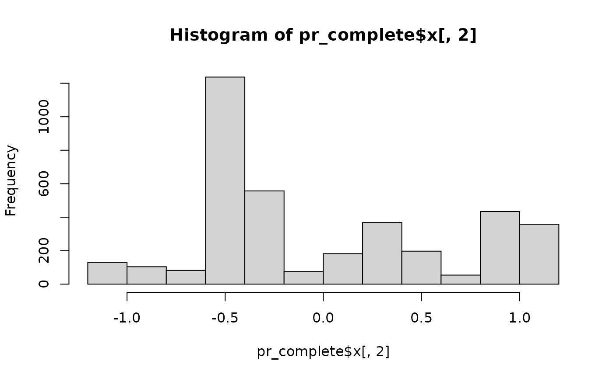
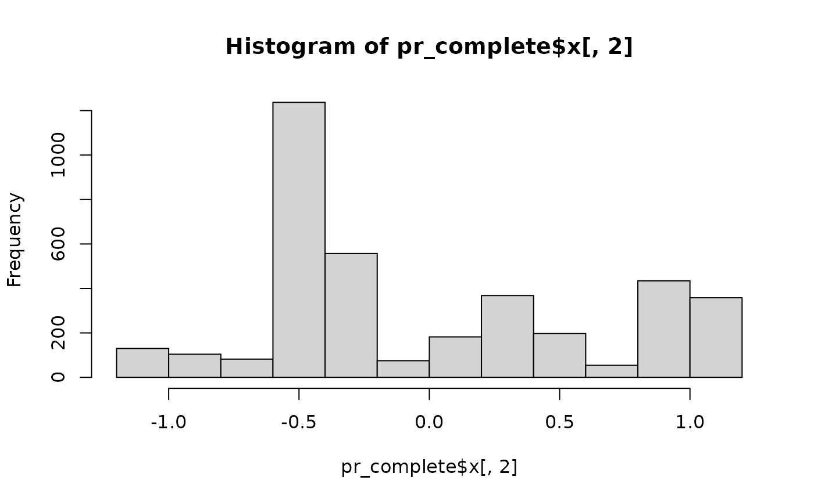

Principal Components Vs Factor Analysis
Source:vignettes/PCA_Factor_Analysis.Rmd
PCA_Factor_Analysis.RmdThis example illustrates the use of the method of Principal Components to form an index
Principal Components is a mathematical technique (not a statistical one!) based off the eigenvalue decomposition/singular value decomposition of a data matrix (or correlation/covariance matrix) Link. This technique re-represents a complicated data set (set of variables) in a simpler form, where the information in the original variables is now represented by fewer components, which represent the majority (we hope!!) of the variance in the original data. This is known as a variable reduction strategy. It is also used commonly to form indices in the behavioral/social sciences. It is closely related to factor analysis Link, and indeed the initial solution of factor analysis is often the exact same as the PCA solution. PCA preserves the orthogonal nature of the components, while factor analysis can violate this assumption.
##Analysis
Now we prepare to fit the survey corrected model. Here I just get the names of the variables that i will use, this keeps the size of things down, in terms of memory used
We use the prcomp function to do the pca, we specify our variables we want in our index using a formula, the name of the data, we also specify R to z-score the data (center=T removes the mean, scale=T divides by the standard deviation for each variable), and the retx=T will calculate the PC scores for each individual for each component.
#> Importance of components:
#> PC1 PC2 PC3 PC4 PC5
#> Standard deviation 0.7370 0.6143 0.4676 0.31602 0.29372
#> Proportion of Variance 0.4098 0.2848 0.1650 0.07536 0.06509
#> Cumulative Proportion 0.4098 0.6946 0.8596 0.93491 1.00000#> PC1 PC2 PC3 PC4 PC5
#> dem11 -0.18754489 -0.1938924 0.962456948 0.03007285 -0.0022163918
#> dem2 0.93138203 -0.3447143 0.112997068 -0.03051093 -0.0005431262
#> jc10 -0.20619275 -0.6222242 -0.167094789 0.10383620 0.7291220805
#> jc13 -0.22188573 -0.6653686 -0.181482566 0.08411002 -0.6841352074
#> jc15a -0.07487126 -0.1170450 -0.007189957 -0.99010517 0.0182976055 

The first two components account for 38.8% of the variation in the input variables, that isn’t bad. Also, we see 3 eigenvalues of at least 1, which suggests there are 3 real components among these 9 variables (remember, we are looking for eigenvalues > 1 when using z-scored data).
In terms of the loadings for PC1, we see positive associations with everything but insurace status. We may interpret this component as an index for overall status, since all variables are loading in the same direction.
For PC2 we see a mixture of loadings, some positive, some negative, and the only two variables that aren’t loading heavily are low physical activity (lowact) and fair/poor self rated (badhealth). We may interpret this components as more of a metabolic physical status, since the postive loadings are on the cardio-pulmonary and body mass variables (hpb, hc and bmi), with the exception of insurance coverage, while the more negative loadings are on more ot the behaviors variables.
Of course, interpreting components is more art than science…
Next, I calculate the correlation between the first 2 components to show they are orthogonal, i.e. correlation == 0
#> PC1 PC2
#> PC1 1.000000000000000000000 0.000000000000001776571
#> PC2 0.000000000000001776571 1.000000000000000000000Here we examine correlation among our variables
#> dem11 dem2 jc10 jc13 jc15a
#> dem11 1.000 -0.131 0.138 0.140 0.074
#> dem2 -0.131 1.000 -0.082 -0.086 -0.084
#> jc10 0.138 -0.082 1.000 0.628 0.176
#> jc13 0.140 -0.086 0.628 1.000 0.183
#> jc15a 0.074 -0.084 0.176 0.183 1.000Sometimes it’s easier to look at the correlations among the original variables and the components
#> dem11 dem2 jc10 jc13 jc15a pc1 pc2
#> dem11 1.000 -0.131 0.138 0.140 0.074 -0.285 -0.245
#> dem2 -0.131 1.000 -0.082 -0.086 -0.084 0.953 -0.294
#> jc10 0.138 -0.082 1.000 0.628 0.176 -0.322 -0.811
#> jc13 0.140 -0.086 0.628 1.000 0.183 -0.332 -0.831
#> jc15a 0.074 -0.084 0.176 0.183 1.000 -0.169 -0.221
#> pc1 -0.285 0.953 -0.322 -0.332 -0.169 1.000 0.000
#> pc2 -0.245 -0.294 -0.811 -0.831 -0.221 0.000 1.000Make the survey design object
#> mean SE
#> dem2 1.3726 0.0130
#> dem11 1.6194 0.0090
#> jc13 1.5894 0.0082
#> jc10 1.6667 0.0080
#> jc15a 1.8794 0.0058
#> wt 1.0000 0.0000The first analysis will look at variation in my index across age, and work status:
The age plot is nice, and really shows that older ages have higher values for our index variable, which confirms our interpretation that higher values of the index are “not good”
Now we do some hypothesis testing. This model will examine variation in my index across age, education, race and two healthcare access variables:
Quick Factor analysis
In case you were wondering about how to do basic factor analysis, here you go:
So we get a slightly cleaner index with the first factor than with the PCA, in the FA, we see that the first factor is more of a “general index”, with the key variables being the #’s of days and the self rated health, while the second factor corresponds very well with what we saw from the PCA. Often times, factor analysis will often give cleaner looking results than PCA, because you can monkey with the initial solution.